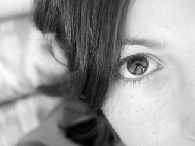

About Me
Remember when you would swing as a kid and you would reach that point when you were going neither up nor down? It was such a rush to be weightless even if it was for just an instant. The desire for that feeling has encouraged me to jump out of a plane and see the world so tiny but ever growing by the minute while the wind rushes by. I’ve learned to scuba so that I could breathe beneath the waves and see flashes of color in the form of fish ‘fly’ by me. I’ve gone hiking far into the woods to shake the sounds and intrusions of civilization so as to hear the sound of the world itself. I’ve listened to the stories of great old men that I’ve had the pleasure and privilege to know. Completely aware that I myself will never be able to hold the attention of an audience like that. I believe that we all live many lives in each of our lifetimes. I have done many things. Now, the desire for that rush has inspired me to go down another path. I am learning a completely new language. I hope that in some small way, I will be able to touch the world. It is a lofty goal and a bit daunting but thrilling as well. Will I succeed? The jury is out but I’m walking through the door.
Connect with Me